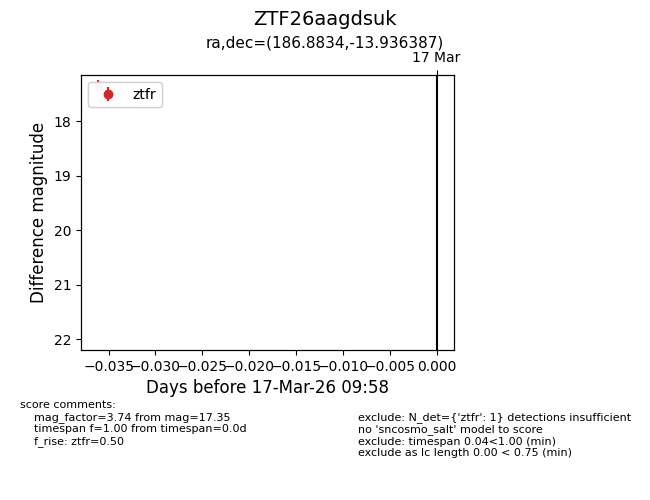
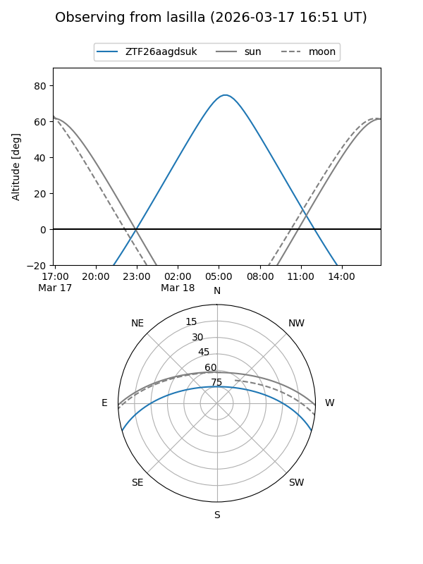
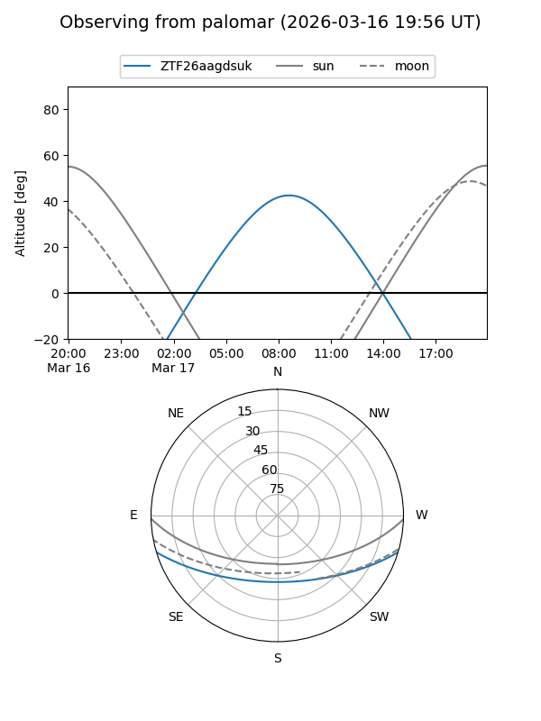

ZTF26aagdsuk
Target ZTF26aagdsuk at 2026-03-17 10:00
Aliases and brokers:
FINK: link
Lasair: link
ALeRCE: link
alt names
ZTF26aagdsuk (ztf,fink_ztf)
Coordinates:
equatorial (ra, dec) = 186.8834,-13.93639
equatorial (HMS+DMS) = 12:27:32.01,-13:56:10.99
galactic (l, b) = (294.1553,+48.52758)
Flags:
Photometry:
last ztfr=17.35
1 ztfr detections
Lightcurve

Visibility


Additional plots